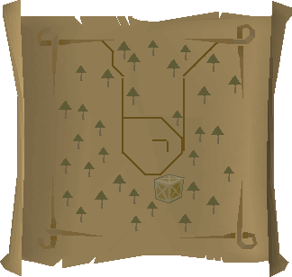
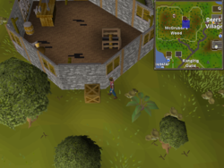
Inside McGrubor's Wood, west of Seers' Village. Fairy ring code als. If approaching from outside, squeeze through the broken fence by the northern half of the hut in the center and search the crate south of the house.
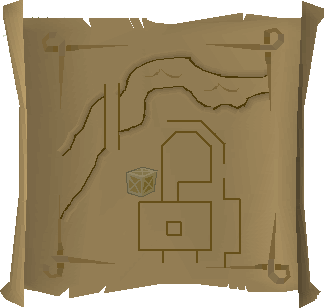
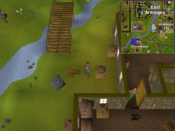
Search the crate by the Clock Tower, south-west of East Ardougne. Ardougne cloak is fastest travel method. Spirit tree to Battlefield of Khazard is also close.
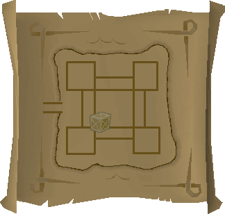
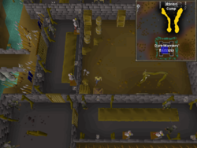
In level 14 Wilderness, at the Dark Warriors' Fortress, search the pile of crates in the south-west corner of the central courtyard.
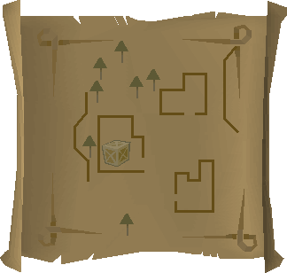
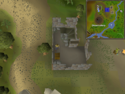
North east of the Observatory, north of Castle Wars, search a crate in the western most building of the goblin overrun houses. This house holds the entrance stairs to the dungeon below.
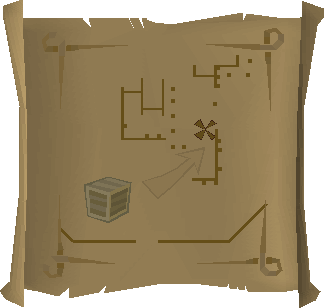

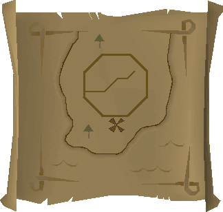
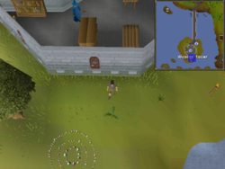
Directly behind the Wizards' Tower, there's a fern you can use as a reference, the dig spot is one tile directly north of the fern.
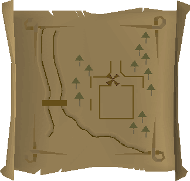
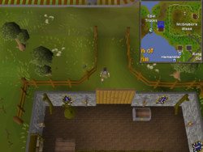
One tile west of the north door of Galahad's house, west of McGrubor's Wood.
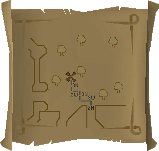
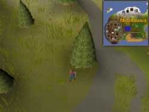
On Miscellania, one of the Fremennik Isles, just east of the castle.
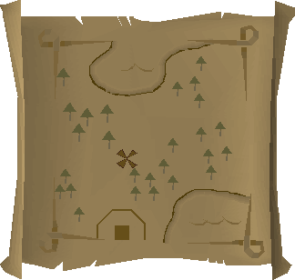
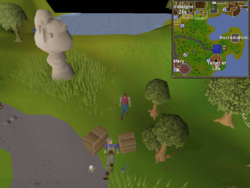
Just south of East Ardougne, (straight south of town square) north of the Tower of Life, near the Necromancer Tower. Dig two spaces north of the smaller crate that Bonafido is leaning on. Fairy ring code djp is very close.
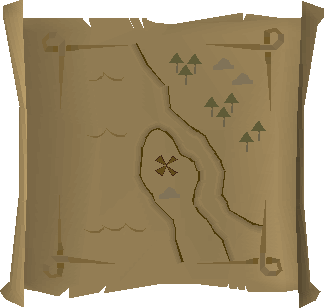

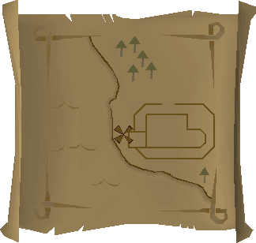
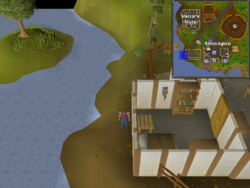
Just west of the Chemist's house in Rimmington. South of Falador, west of Port Sarim.
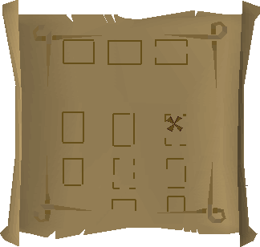
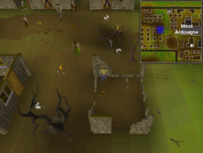
Located in West Ardougne, dig inside one of the destroyed buildings. It is in the north-east corner of the housing buildings in the south-west area of West Ardougne. Head due west from the main gate, and you'll get to the buildings.
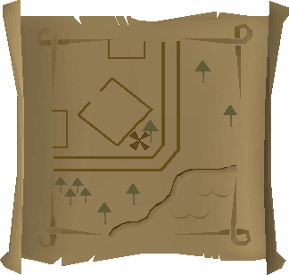
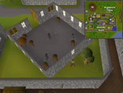
South of Yanille bank. Behind the house with an anvil.
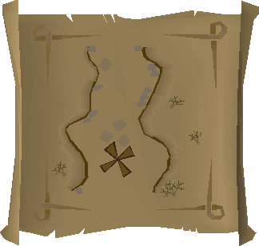
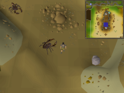
Just north of Al-Kharid, in the center of the mine.
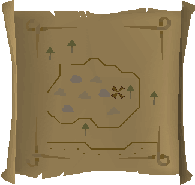
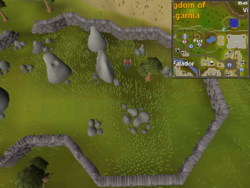
Just north of Falador in the standing stone circle
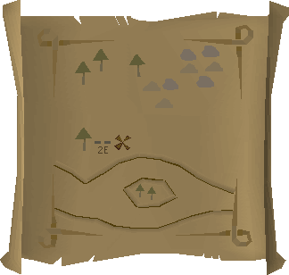
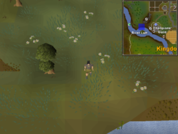
Locate the single tree that is west of the Champions' Guild, outside Varrock. Dig two squares to east of it.
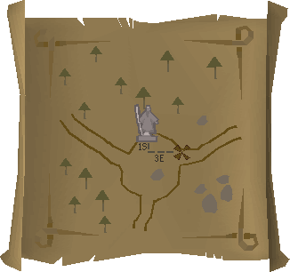
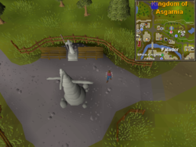
The statue is located at the crossroads north of Falador.

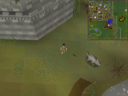
South-eastern Varrock Mine. Dig one square west of the plant.
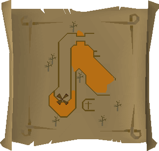
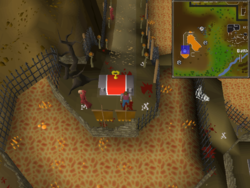
West of the Khazard Battlefield.

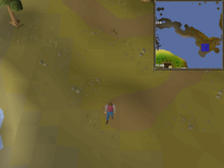
Road between Rellekka and the Lighthouse
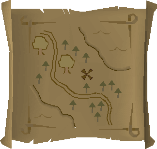
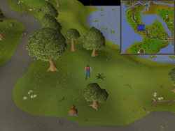
North of Seers' Village, along the path towards Rellekka.
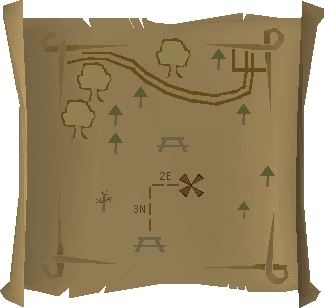

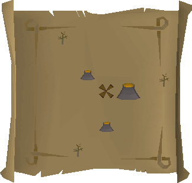

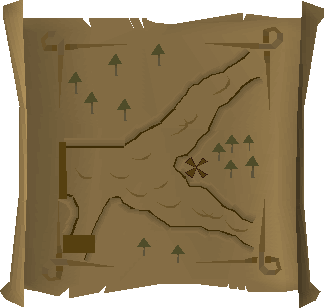
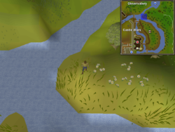
North east of Castle Wars, just southwest of the Gnome Maze.
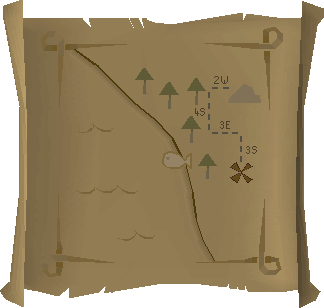
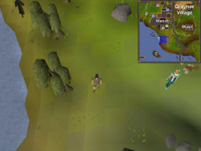
South of Draynor Village bank, by the fishing spot.

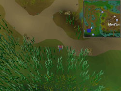
North of the Abandoned Mine, by the path to Mort'ton.
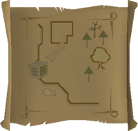
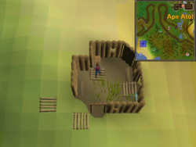
In the south-west coast of Ape Atoll, there is a little shack where the crate is located.
Fairy ring code CLR is close to it. Bring a ninja monkey greegree or Kruk greegree if using the fairy ring.
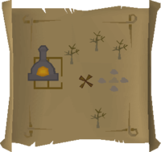
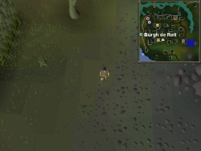
East of the Burgh de Rott furnace. Requires starting In Aid of the Myreque.

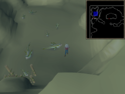
Inside the mudskipper cave west of the Mogre Camp. Players must collect five rocks before going inside.
Directly south of the soul altar.
East of the small building in Zul-Andra, next to the tree. Requires starting Regicide.